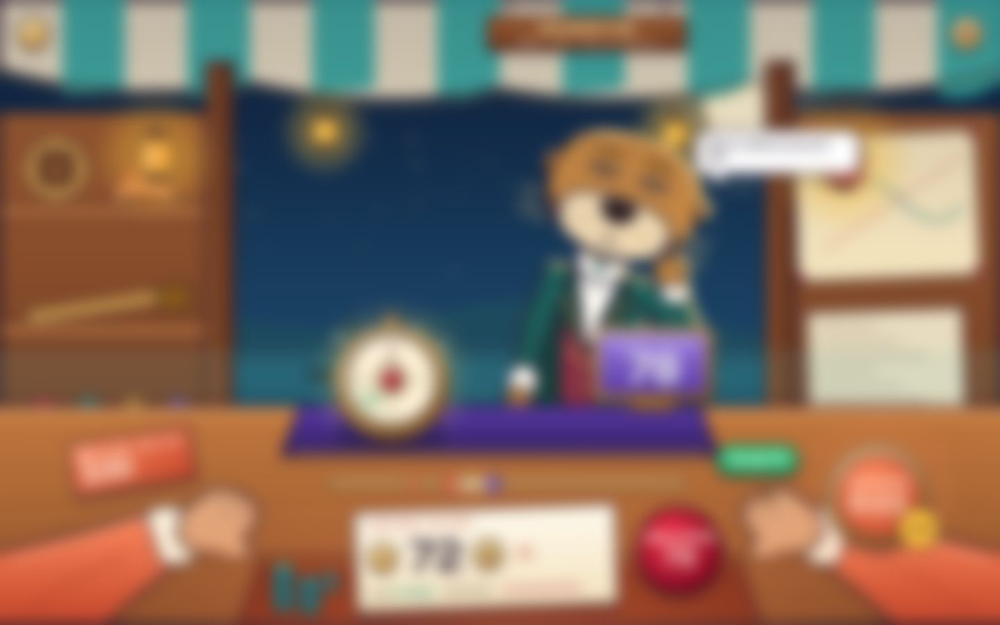
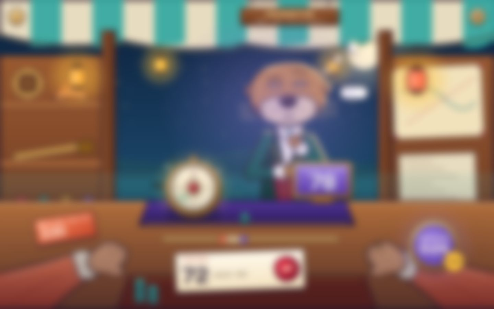
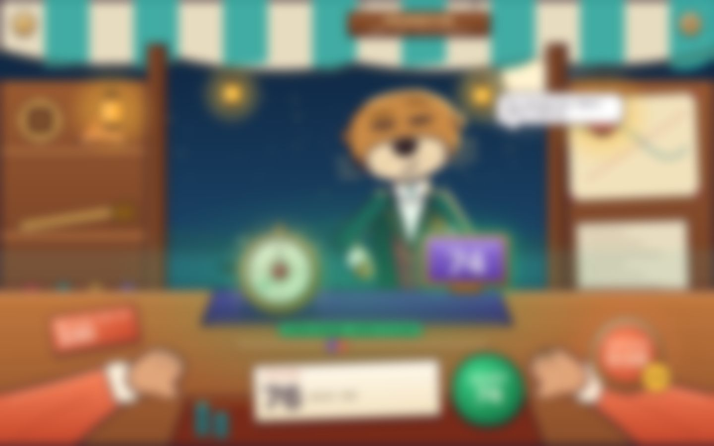
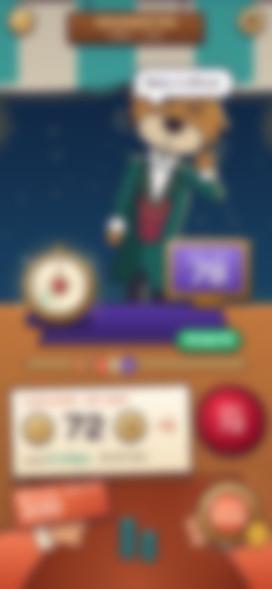
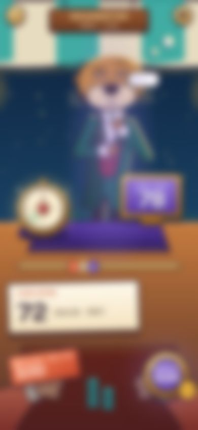
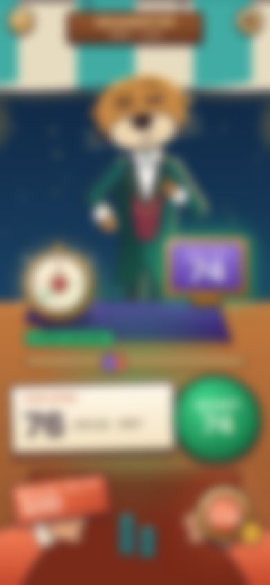

Your move
Their move
Offers crossed
Mobile · mine
Their move
CrossedThe ember sleeves and hands at the bottom edge, where the camera sits. My limit card and chips are by my hands.
The only character in the frame, centred, full costume, lit by the stall lanterns.
The single glowing object on the violet runner between us.
Light: warm ember pool at my edge vs violet spotlight on them. The turn-clock enamel repeats it. Their pose (listening vs thinking) confirms it.
The distance between the ember and violet pins on the brass rail. Crossed pins turn it green.
The one big wax seal: crimson = send my offer; green = accept theirs. On their turn there is no seal at all.
10 px Gaussian blur at 1440 wide, 7 px at 390 (stricter than the 7 px v2 test). Same six questions as the v2 test on page 02.